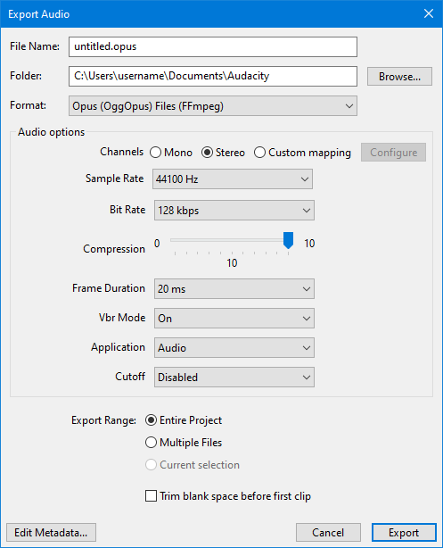

Opus Export Options
For further details on OPUS see this Wikpedia page.
- Accessed by: then choosing Opus (OggOpus) Files (FFmpeg) from the Format dropdown menu.
- 
Audio Options
These offer different ways to control the trade-off between the size and quality of the exported files.
Channels
Sets the number of channels for the exported audio file. There are three options
- Mono: single channel
- Stereo: stereo pair with left and right channels
- Custom mapping: use this to export multi-channel (surround sound) files or to make customized assignments between Audacity tracks and the channels in the exported file.
- Selecting this and clicking on the button causes the Advanced Mixing Options dialog to appear. For details please see Advanced Mixing Options.
Sample Rate
Sets the sample rate for the exported file. Default setting is 48000 Hz, which is DVD quality.
Bit Rate
Opus Export in Audacity offers several different bit rate options for the export ranging from 6 kbps up to 256 kbps. The default is 128 kbps, Opus at 128 kbps (VBR) is pretty much transparent.
Opus at 64-96 kbps shows slightly superior quality compared to AAC and significantly better quality compared to Vorbis and MP3 at the same bit rate.
Quality
This controls the degree of compression used ranging from 1 to 10 (default).
Frame Duration
The Frame Duration ranges from 2.5 ms to 60 ms. The default is 20 ms.
Opus uses a 20 ms frame size by default, as it gives a decent mix of low latency and good quality, the default 20 ms frames are a good choice for most applications.
VBR Mode
This is the mode used for Variable Bit Rate. This can be:
- On: (default) will give you a variable bit rate to optimize the exported audio
- Off: will export a file with a constant bit rate, the rate that you set
- Constrained: sets an upper limit to the variable bit rate. Constrained prevents a very high bit rate peak from happening by setting an upper limit.
| Opus at 128 kbps VBR (default settings) is pretty much transparent. |
Optimize for
This defines what use you will be making of the exported file
- VOIP: Voice over IP optimized for voice
- Audio: (default): optimized for audio
- Low Delay: useful for communication purposes (like voice calls, video conferencing or making music via the Internet), for which not only high compression ratios are necessary, but low latency is critical too.
Cutoff
This can range from Disabled (default) to Fullband.
The cutoff option sets the bandwidth of the encoder \xe2\x80\x93 bandwidth meaning the highest frequency that will be encoded.
While typically you would not restrict the bandwidth when encoding audio for home theater, music listening, etc., there are other use cases such as telephony or video conferencing, where it is not necessary to transmit the whole frequency spectrum.
| See this page from xiph.org on Opus Recommended Settings for these parameters. |